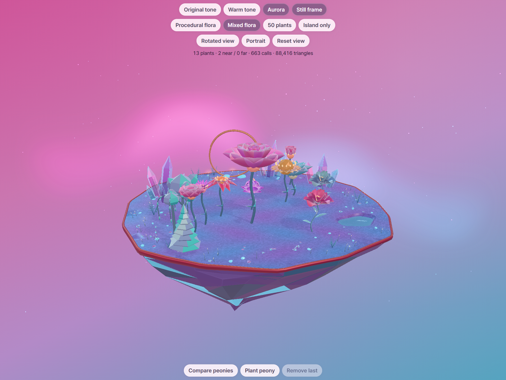
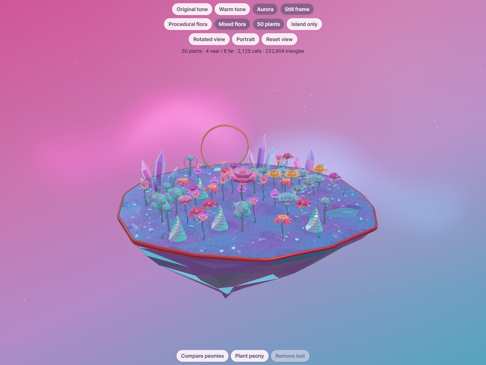
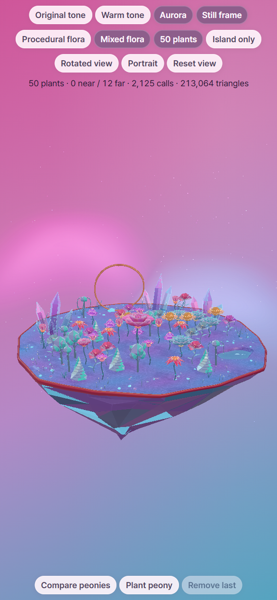
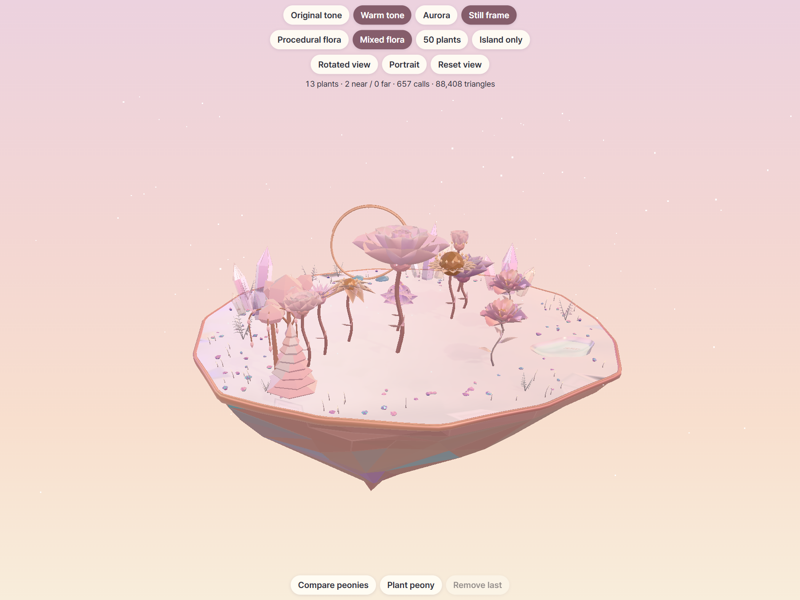
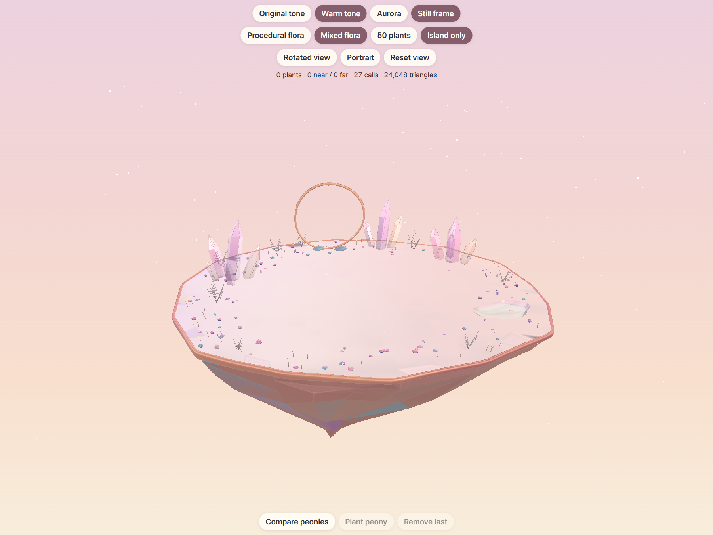

SUP grass · matched before and after
Actual app screenshots from the exact released Aurora baseline and the final grass candidate. Same cameras, deterministic scene time, and 1.5 pixel ratio. Click any image for its original pixels.
20,099 static triangles · 14,099 island + 6,000 grass. 1,000 clumps, six triangles each, one opaque instanced draw. Grass receives flower contact shadows and casts none. Plant selection, detail, growth, LOD, orbit, and dense interaction checks passed.
Short curved blades preserve visible opal gaps and clear flowers. The centered keel is intentionally less projected in the front view. Warm uses its unchanged original asset.
Compact metrics JSON · Raw timing results · Interaction evidence
Aurora · procedural garden
Matched camera and plant positions. 815 → 812 render calls; 101,296 → 102,280 pass-expanded triangles.
Aurora · mixed garden (13 plants)
Before · ba260e2
After · ribbon grass + centered keel
Matched camera and plant positions. 663 → 660 render calls; 88,416 → 89,400 pass-expanded triangles.
Aurora · island only
Matched camera and plant positions. 33 → 30 render calls; 24,056 → 25,040 pass-expanded triangles.
Grass close-up
Matched camera and plant positions. 33 → 30 render calls; 24,056 → 25,040 pass-expanded triangles.
Right side
Matched camera and plant positions. 33 → 30 render calls; 24,056 → 25,040 pass-expanded triangles.
Rear
Matched camera and plant positions. 33 → 30 render calls; 24,056 → 25,040 pass-expanded triangles.
Left side
Matched camera and plant positions. 33 → 30 render calls; 24,056 → 25,040 pass-expanded triangles.
Low side · centered keel
Matched camera and plant positions. 33 → 30 render calls; 24,056 → 25,040 pass-expanded triangles.
Aurora · 50 plants
Before · ba260e2
After · ribbon grass + centered keel
Matched camera and plant positions. 2,125 → 2,122 render calls; 222,904 → 223,888 pass-expanded triangles.
Mobile · 390 × 844 CSS pixels
Matched camera and plant positions. 663 → 660 render calls; 83,496 → 84,480 pass-expanded triangles.
Mobile · 50 plants
Before · ba260e2
After · ribbon grass + centered keel
Matched camera and plant positions. 2,125 → 2,122 render calls; 213,064 → 214,048 pass-expanded triangles.
Warm · preserved garden
Before · ba260e2 After · ribbon grass + centered keel
After · ribbon grass + centered keel
Matched camera and plant positions. 657 → 657 render calls; 88,408 → 88,408 pass-expanded triangles.
Warm · preserved island
Before · ba260e2
After · ribbon grass + centered keel
Matched camera and plant positions. 27 → 27 render calls; 24,048 → 24,048 pass-expanded triangles.
Controlled timing
ANGLE (Google, Vulkan 1.3.0 (SwiftShader Device (Subzero) (0x0000C0DE)), SwiftShader driver). Software rendering only; no physical mobile FPS claim.
| Scene | Before, ms | After, ms | Change |
|---|
| desktop-50 | 272.55 | 240.9 | -11.61% |
| desktop-island-only | 126.2 | 134.75 | +6.77% |
The first dense baseline was 308.1 ms and the later baseline was 237.0 ms. This variation means the apparent -11.6% average is not reliable evidence of a GPU or speed improvement. Final blocks were 239.6 and 242.2 ms, close to the later baseline. Island-only software cadence was about 6.8% slower. No physical-device conclusion is supported.
Average of two settled block medians per variant, 60 frames each, ABBA order in one active browser tab. Before/after includes all requested changes. Shader compilation and startup are excluded.